Se encuentra en la región de la torre de Necluda, y para acceder a él debes subir a una pequeña elevación situada al sur de la Aldea Hatelia.
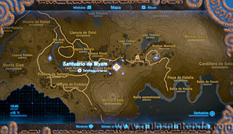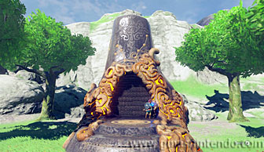
Una vez dentro tendrás que usar el control por movimiento de tu mando de control. Sube las escaleras hasta llegar al extraño artilugio que puedes examinar. Cuando lo hagas comenzarás a mover la plataforma que se encuentra delante de ti al mover el mando con el sensor de movimiento. El objetivo es lograr que la bola que hay dentro del laberinto llegue a su destino (la salida está en la parte izquierda).
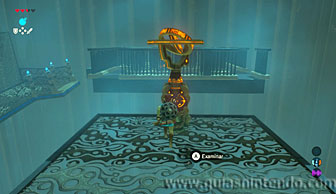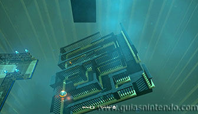
Antes de hacerlo, puedes coger el cofre que hay dentro del laberinto, para conseguirlo deja la plataforma inclinada de forma que puedas saltar a ella con la paravela. Sin embargo, no la dejes muy abajo o no podrás regresar. Saltando desde encima de una barandilla. En el cofre encuentras un arco del vigilante.
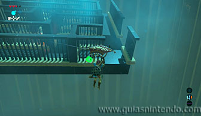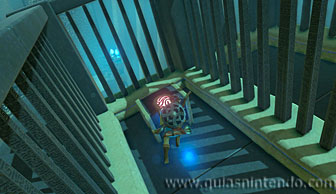
Para conseguir que la bola llegue a su destino tendrás que ir con mucho cuidado girando suavemente el mando para que no se te caiga. Cuando llegues a la posición final, mantén muy recto el mando y gíralo a la izquierda para que la bola se deslice hacia la salida, pero un momento antes de caer debes girarlo a la derecha (sin hacerlo hacia adelante o atrás) para impulsar a la bola. Si no lo haces así, caerá al vacío.
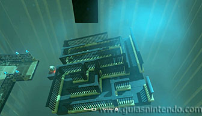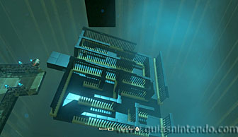
Si te resulta muy complicado, tal vez quieras probar dando la vuelta al mando de control. En este caso la plataforma no tendrá vallas y no tienes que seguir el camino inicial con la esfera. Sin embargo, la forma de alcanzar la salida es la misma que si no das la vuelta al mando.
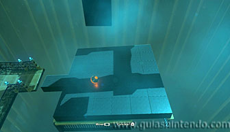
Si lo has hecho bien, la esfera llegará automáticamente a su destino y se abrirá el camino hacia el altar del santuario. Cuando llegues a él podrás examinarlo para obtener un símbolo de valía.
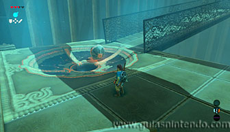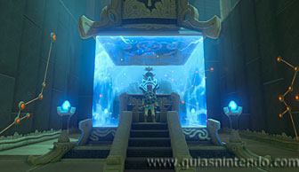